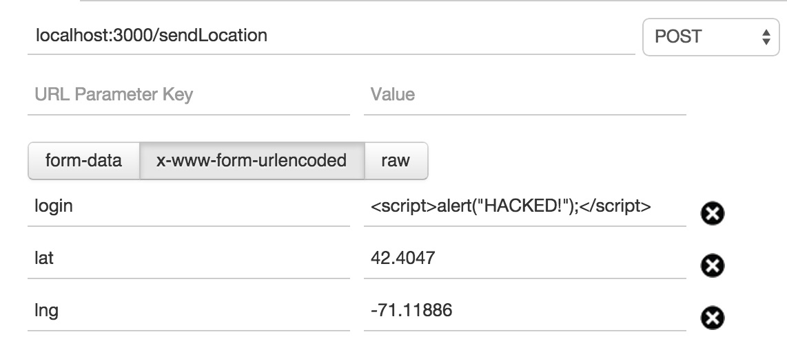
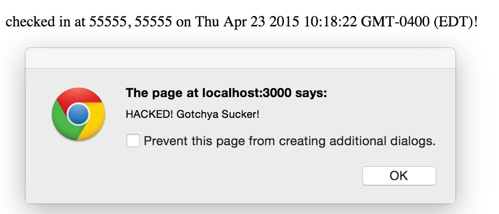
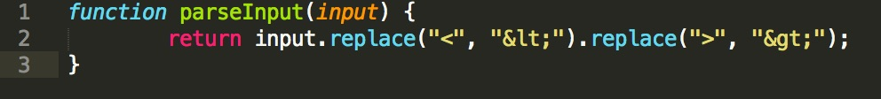
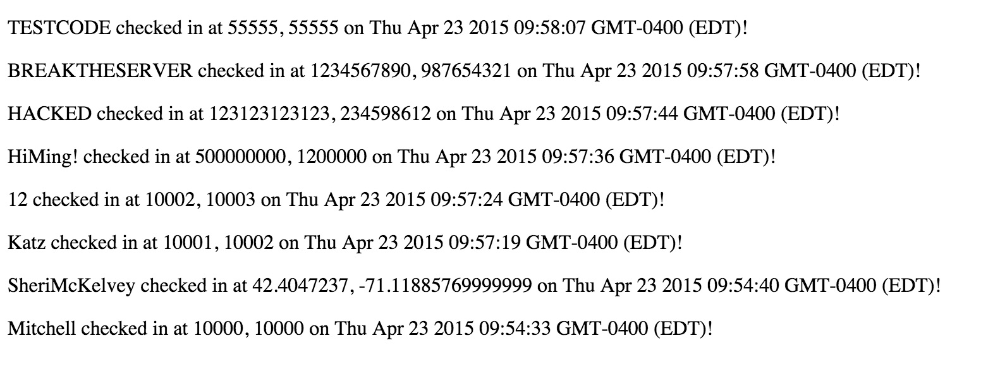
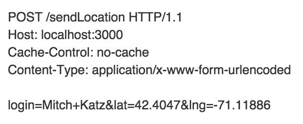
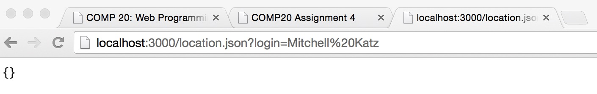

COMP20: Assignent 5
Report by Mitchell Katz
Analyzing Web App by Zabir Islam
Tuesday, April 21, 2015
For Assignment 2, we created a map application that sent the client's current location to a server, and received a JSON of all check-ins to the server. The page would then create a map of all of the locations and calculate the distance from the user.
In Assignment 3, we then recreated the server. We created an API that would accept the locations, store them in a MongoDB database, and could respond to external requests. This relied on enabling CORS and setting up a web database server
Finally, I was "hired" to test the security of Zabir's application, breaking the app if need be. I am looking for all security vulnerabilities that I can find and then suggesting solutions for those problems.
I performed a two step analysis of the application. First was a black-box attempt to breach the security of the server and webpage. Second, I examined the source code for the server and page. The main tool I used to examine the security of the application was the REST client Postman
Most of the issues I found came with sending bad information to the server in various capacities. The application takes information in, and displays it back out but performs very few checks on the information so if the client (or some hacker) passes information that is dangerous in some capacity it will break the application in various ways. The application trusts the user too much and would be much more secure if it tried to verify the validity of the input in some capacity.
Severity: HIGH -- XSS Vulnerability
The POST request accepts any string as valid input for the login parameter, and both of the GET requests will display the string. This means that if the login parameter is JavaScript code it will be executed upon running a GET request that returns it, allowing hackers to post malicious information, redirect to other webpages, or conduct other fradulent activity.
Using a REST client, I sent a POST request with a JavaScript script code to create an alert instead of the login parameter.
Solution: The server should parse the input, changing the < into the HTML text equivalent < and the > into the equivalent >
Severity: MEDIUM -- No Data Validation
For the POST request, the server accepts any numbers as valid form data for the latitude and longitude, meaning you can POST bogus coordinates that do not exist on the globe (i.e. Latitude = 10000 and Longitude = -550)
Using Postman (or any REST client) I sent a check in containing invalid coordinates to the server. While the Google Map API did not break, this does waste valuable server space.
Solution: The server should have a simple check whether the coordinates are within valid Latitude and Longitude ranges (-90 to 90 and -180 to 180 respectively)
Severity: LOW -- HTML Special Character Encoding
Different REST clients encode special characters (like spaces " ") with different methods meaning that POSTing a request with login "Mitchell Katz" through Postman and then trying to GET location.json with query: "login=Mitchell Katz" will not return the document
Again, using Postman send a POST request with the login equal to some string with spaces. Since the API uses x-www-form-urlencoded format for the POST method, that encodes spaces as "+" but the GET method is URL encoded so it will encode a space as "%20". This change will lead to login strings with spaces not being found in the Mongo Database.
The best solution to this problem (in my opinion) is just to clarify the API contract that spaces are not allowed as input, however you could also parse the input like you do with XSS attacks.
The security problems found in the Marauder's Map make it both easy for a hacker to waste memory space through fradulent data as well as make the User's experience miserable through XSS attacks leading to popup ads and redirections. Fixing these changes is a matter of specifying what the server requires for input and making sure the client and server ONLY accept correct data.